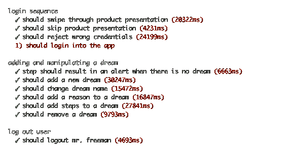

Appium
Automation for Apps
Appium is an open source test automation tool for use with native and hybrid mobile apps.
It drives iOS and Android apps using the WebDriver JSON wire protocol.
Or get the old node-webkit version (requires Node.js)
Automation for Apps
Appium is an open source test automation tool for use with native and hybrid mobile apps.
It drives iOS and Android apps using the WebDriver JSON wire protocol.
Or get the old node-webkit version (requires Node.js)
Appium is built on the idea that testing native apps shouldn't require including an SDK or recompiling your app. And that you should be able to use your preferred test practices, frameworks, and tools. Appium is an open source project and has made design and tool decisions to encourage a vibrant contributing community.

Appium aims to automate any mobile app from any language and any test framework, with full access to back-end APIs and DBs from test code. Write tests with your favorite dev tools using all the above programming languages, and probably more (with the Selenium WebDriver API and language-specific client libraries).
> Mac OSX 10.6 +
> XCode
> Apple Developer Tools
(iphone simulator, command line tools)
> Android SDK API >= 17
Install node.js (includes npm, the node.js package manager).
> sudo npm install appium -g > npm install wd > appium & > node your-appium-test.js
See the Appium example tests.